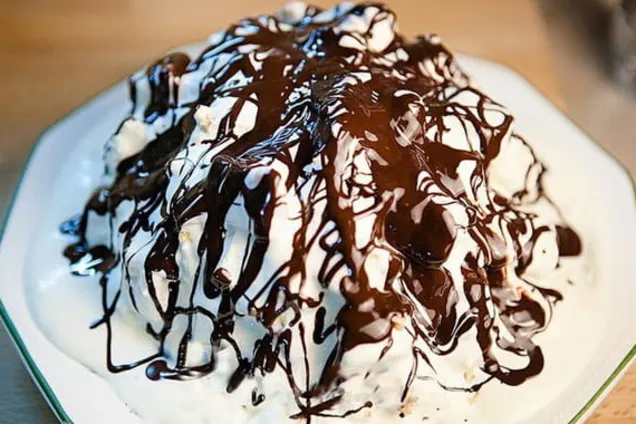

Найкращі рецепти тільки тут !
Для більш детальної інформації ТИЦЯЙ СЮДИ!!!
Напоеон
Медовик
Три молока
рецепти
Інгрідієнти
Спосіб приготування
ПІНЧЕР

Яйца 3 шт>
Сметана 20% 200 мл + 700 мл
Сгущенное молоко 1/2 банки
Сахар 160 г + 200 г + 4 ст. л.
Какао 2 ст. л. + 2 ст. л.
Гашеная уксусом сода 1 ч. л.
Пшеничная мука 1,5 ст
Молоко 50 мл
Масло сливочное 30 г
Дякую що відвідали цю сторінку!
Для більш детальної інформації ТИЦЯЙ СЮДИ!!!